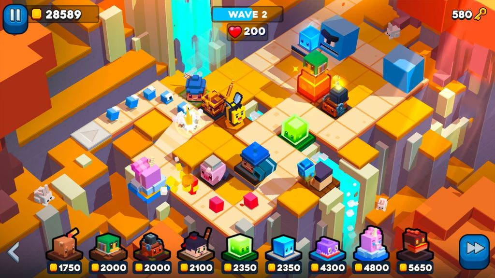
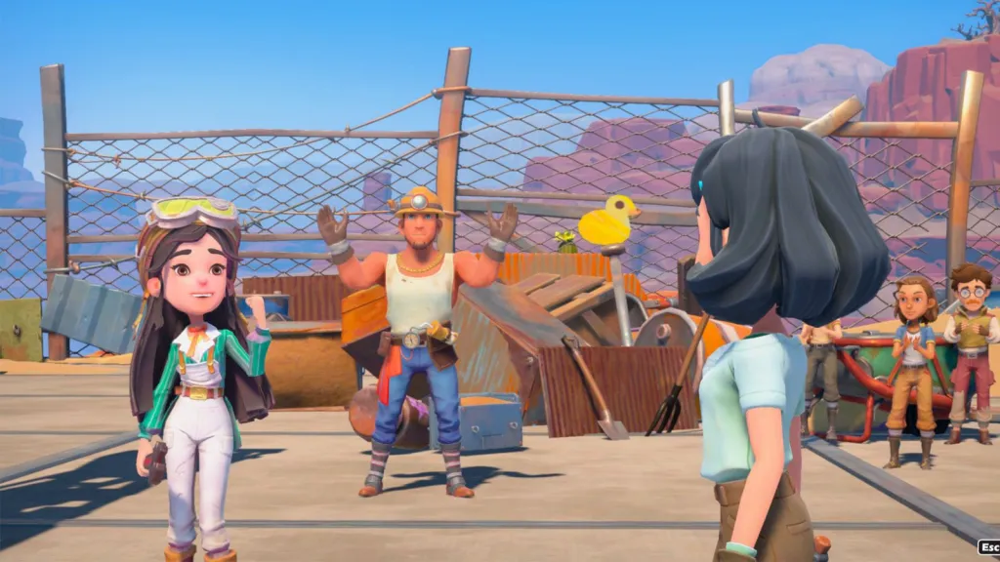
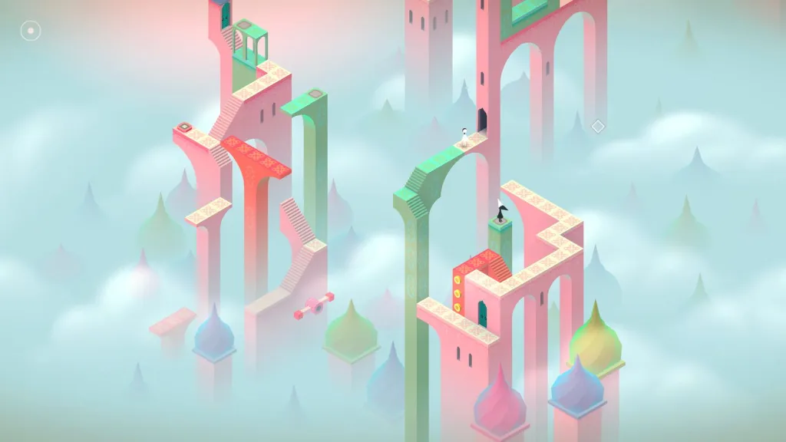
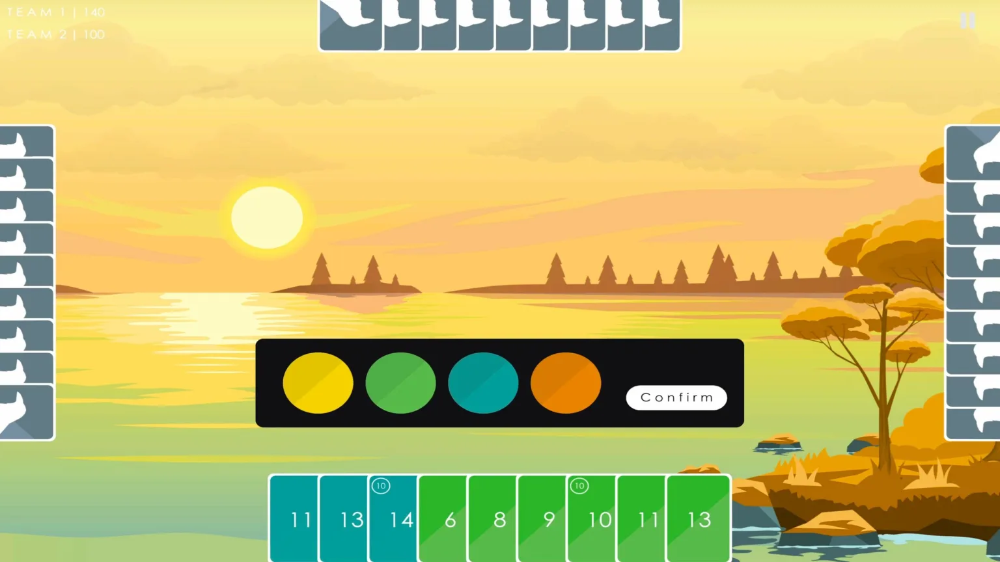
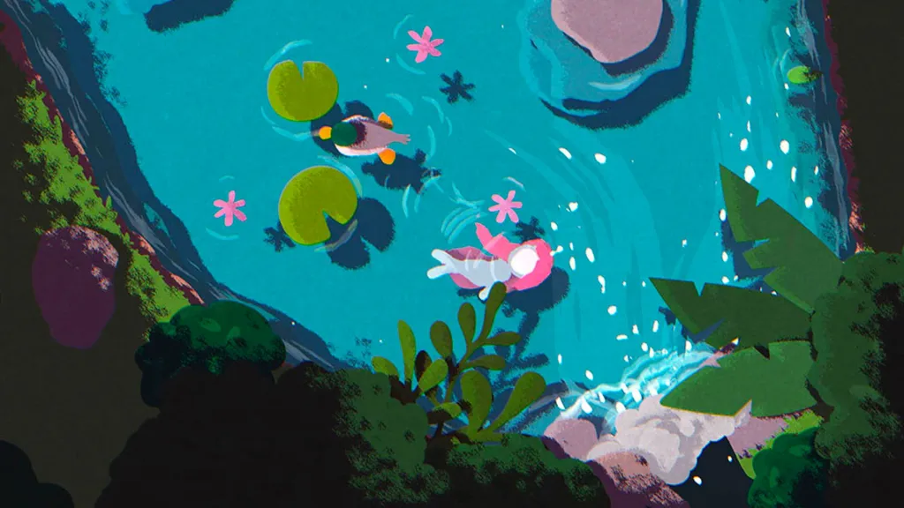

- Home
- About
- BY GENRE
- Top Action Games
- Top Adventure Games
- Top Casual Games
- Top Music Games
- Top Racing Games
- Top Roleplaying Games
- Top Simulation Anime
- Top Strategy Games
- BY PLATFORM
- Top PC Games
- Top Console Games
- Top Android Games
- Top iOS Games
TOP CASUAL GAMES

DEFEND THE BITS TD
Tower defense games have always been a perfect fit for gaming in short bursts, and Defend The Bits TD fits that bill well. Updated from its original release on mobile devices, Defend the Bits TD has a bright, voxel palette that’s reminiscent of games like Minecraft and Crossy Road, but with over 100 quests, upgradeable characters, and 20 classes to play with.

MY TIME AT SANDROCK
Treading in the well-worn ground of other chilled, crafting sims like Stardew Valley and No Place Like Home, My Time at Sandrock drops you in the middle of a desert community desperately needing a bit of TLC. It’s a sequel to the hugely successful My Time at Portia, which sold more than 1.7 million copies back in 2019. And in a similar vein to Portia, Sandrock is set in a post-apocalyptic period where a disaster has wiped out the majority of human technology.

MONUMENT VALEY: PANORAMIC EDITION
One of the all-time great meditative puzzlers, Monument Valley: Panoramic Edition is the Steam re-launch of ustwo’s mobile classic. With its accessible gameplay, outstanding soundtrack, and gorgeous, minimalist 3D designs, Monument Valley is one of the must-play casual experiences. If you haven’t enjoyed Monument Valley yet, its re-release on Steam is well worth it.

RAVEN
Card games are a great fit for low commitment, easy to pick up and put down experiences. Raven’s
a perfect example of this in motion. It’s built around a similar ruleset to the classic
trick-taking card game Rook, but with a series of gorgeous, minimalist landscapes that change
over the course of the match.
Raven is available on the App Store and Google Play Store worldwide.

NAIAD
First announced during the 2022 Day of the Devs stream, Naiad is a relaxing adventure where you
play as a water nymph swimming through a river.
The aim of the game is to simply float around, interacting with the nearby flora and fauna to
discover the secrets of the world around you. Along the way you’ll run into different creatures
who need a hand, overcoming light obstacles on your way to reaching the sea.